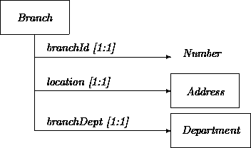

|
Chapter 3: Object Statics |
In previous chapters, we have shown definitions of objects, but we do not expect that the reader has a ``gut level'' understanding of what they are beyond the things that are usually encountered in everyday life. We surmise that everyone starts out this way. Thus, an object can be your boyfriend, NYC, the Ferrari in the showroom which is beyond your means, the Taj Mahal, etc. At the same time, objects can be non-tangible things (provided that someone wants to see it that way) such as a bank transaction, a newspaper story, a phone call, a rental car contract, a utility bill, an airline reservation, a bank account, etc.
Our graphical notation for a singular object is simply a dot. For example an instance of the class Account:
The heading of this section is ``instances'', not just ``objects''. We use the notion of an instance when we want to emphasize that an object is a ``member'' of a class. In Chapter 2, we were already using the notion of instance in the context of ``... an instance of one class ...'' In most methods, each object is perceived as being a member of a certain class.
Sometimes we need to talk about a particular instance in our system model. For example, a bank may maintain some key ``system'' accounts. We may want to describe a few special employees, e.g., the executive officers. Usually, however, collections of objects, so-called classes 1 are described.
Footnote 1:
The notions of ``type'' and ``class'' are sometimes distinguished in the implementation realm. A type is the abstract characterization of a particular ``family'' of objects, while a class is then the actual realization in a particular programming language of that type. We will uniformly use the term ``class''. Later in Part II we refer to directly implementable versions as ``concrete''.
A class stands for a family of objects that have something in common. A class is not to be equated with a set of objects, although at any moment we can consider the set of instances that belong to the class. A class may be seen as what all these sets have in common. In technical terminology, a class stands for the intension of a particular characterization of entities, while the set of objects that conform to such a characterization in a certain period is known as the extension (see Carnap [3]).
Notationally, a rectangle surrounds the name of a class. For example, the class Account is depicted as:
An object is an instance of at least one and at most one class. Certain methods allow an object to change, during its lifetime, the class of which it is an instance. This freedom increases the expressive power of the analysis method. But since most OO software development methods and languages do not support this feature, and since the effects of change may be described by other means, we refrain from this practice.
Individual objects are primarily characterized by an indication of which class they belong. For example:
The arrow between the instance and its class is called the ISA relationship. This is not the same as the class inheritance relationship discussed in Chapter 7.
This instance characterization is insufficient. At this stage, we do not have available the means, beyond naming, to distinguish multiple instances of the class Account. In general, we avoid using names to describe individual objects, because usually objects do not have natural names. Just consider the examples given earlier -- a bank transaction, a newspaper story, a phone call, a rental car contract, a utility bill, and an airline reservation. Instead, descriptions are used that somehow denote unique entities. Attributes of objects will do the descriptive job.
Real-life entities are often described with words that indicate stable features. Most physical objects have features such as shape, weight, color, and type of material. People have features including date of birth, parents, name, and eye color. A feature may be seen as a binary relation between a class and a certain domain. Eye color for example, may be seen as a binary relation between the class of Eyes and an enumerated domain {brown, blue, yellow, green, red}. A domain can be a class as well, for example, in the case of the features parents, spouse, accountOwnedBy, etc.
The applicability of certain features (i.e., the features themselves, not just their values) may change over time. For example, frogs and butterflies go through some drastic changes in their lifetime. We avoid this kind of flexibility. Thus, a class is characterized by its set of defining features, or attributes. This collection of features does not change. (We later present tricks for getting around this limitation.)
The notion of a (binary) relation crept into the previous discussion. The reader may wonder how we can discuss them here since we have relegated them to another model in our four-component view. We make a distinction between attribute (binary) relationships that represent intrinsic, definitional properties of an object versus relationships that describe contingent, incidental connections between objects. Because we, as analysts, are in control, we can prescribe for an object what is definitional and what is incidental. For example, in a particular system we may agree that for the class Person a social-security-number is a defining attribute while a parent feature is seen as an incidental relationship. In another system, the reverse choices could be made.
We illustrate the notation for attributes with a class Account that has:
A graphical notation for these attribute names and attribute values is:
This representation indicates that AccountNumber is a ``data value'' domain and that Currency is a class. It is debatable whether we should make such a distinction between values and objects. For instance, one can take the stance that integers, strings, and 32-bit reals are all objects as well. Although we will be very picky about the resulting distinctions in Part II, either way is fine with us. We use the convention that unboxed value domains do not represent classes. Consequently, if we change our mind and represent the currency attribute as a data value, we would unbox it.
Attributes can be employed to describe an instance of a class by indicating how it ``scores'' with respect to the attributes. In the following example, we depict a particular instance of the class Account:
Note that attribute names have been repeated in the instance. An alternative approach would use graphic notation to link up the attributes of the instance with the attributes in the class, as in:
We have attached attributes to objects. The next step is to give, in a sense, attributes to attributes. We will call them features to avoid too much confusion.
Two features of attributes have been encountered already, the attribute's relation name, which is sometimes called the role name, and the value domain . Here we expand the features that can be associated with an attribute. We should stress that using these features is optional and can be ignored in first rounds or even all together.
Sometimes it is useful to indicate a default initial value for an attribute. A generous bank may, for example, give a surprised new customer an account with an initial balance of $10. Since sheep are usually white, their color attribute can be given this default value.
A revised Account class includes a notation for indicating a default value of an attribute:
We may want to associate with an attribute our knowledge about the distribution of the values in the value domain. (A default value need not correspond with the value that has the highest probability.) As an example, consider the class Human with the attribute age. The probability distribution corresponds here with a demographic profile. A designer may want to exploit this information.
We avoid introducing special notation. One option is to list (value, probability) pairs. For numerical domains, a probability distribution function may be specified. Any other mathematical notation may be invoked as needed.
A multiplicity feature associates more than one value to an attribute. We use the notation [N:M], where 0 <= N <= M. N indicates the minimum number of values and M indicates the maximum number. A few conventions simplify the notation:
For example, the class Hand might contain the attribute finger with a value domain of class Finger and a multiplicity constraint of [0:6]. This requires an explanation indeed. A hand remains a hand even when all the fingers have been amputated. That explains the minimum 0. The 6 has been chosen because Anne Boleyn had a hand with six fingers.
This multiplicity notation is sometimes not expressive enough. Consider a family of vehicles where the number of wheels per vehicle is 3, 4, 6 or 10. In general, a multiplicity indicator can be any arbitrarily complex description of a set of natural numbers. Given this state of affairs, we omit additional notation beyond observing that predicate calculus provides formal precision and unbounded expressiveness.
For example, a bank has branches, each having departments. We assume that departments consist of a department head and subdepartments. This creates a recursive structure that bottoms out by making subdepartments optional. Thus, a nonmanagerial employee is a department head that does not supervise subdepartments. For illustration, we restrict the branching ratio of departments to six:

Multiplicity indications may be dressed up with more knowledge if this information is beneficial for a design and/or implementation. For example, a reasonable default multiplicity for the number of wheels of a car is four. A probability distribution for the multiplicity feature denoting the number of children per parent might be obtained through an empirical sampling.
The range of an attribute value can be restricted in any of several senses. We always fix an attribute to a particular domain. The values of an attribute of an object must remain within the indicated domain throughout the lifetime of the object. The domain for an attribute listed in a class may be narrowed down to only one possible value. For example, the class Albino has for its color attribute the value white. Intermediate domain restrictions that do not limit attributes to only one value may be expressed via constraints (see Section 5).
Several other senses of restriction are common enough to group under broad categories, allowing simpler qualification:
Qualifiers including fixed, common, and unique may be annotated in any convenient fashion. For example, the following class Client has a social security number attribute that is both unique for each instance and remains fixed over its lifetime:
Constraints may be used to rule out certain attribute value
combinations for all instances of a class. Consider a
Department that has the attributes head and treasurer,
both having Employee as their value domain. We may want to
indicate that these positions cannot be filled by the same person.
These kinds of constraints may be expressed in any convenient
notation. For example:
not(head = treasurer).
For clarity, attributes in such expressions may be qualified
with self. We
assume that every class supports by default an
attribute self which refers for each object to itself:
not(self.head = self.treasurer).
Constraints can refer to other attribute features. Consider, for example, a Polygon with attributes angle and side. We certainly want to express that the multiplicity features of these attributes are the same.
A constraint can reach beyond the boundary of an object. Assume a class Person with the attribute spouse having the [0:1] value domain Person and the attribute sex with the value domain [ male, female]. We may want to express the following constraint (among others):
Many constraints involving multiple objects are more easily and naturally expressed via relations. We discuss relational constraints in Chapter 4.
A special case of a constraint is an expression that describes an attribute functionally, in terms of one or more other attributes.
For example, consider a class Person with the attributes dateOfBirth, dateOfMarriage and ageAtMarriage. The ageAtMarriage attribute may be defined as a function of the other two.
Codependencies are possible as well. A Triangle class with attributes sideLength, angle, bisector, surfaceArea, etc., will have constraints on each attribute that refer to the others. For a different kind of example, consider the class Account with a multivalued
attribute balance and a multivalued attribute transaction. We have the following codependencies:
balance(n+1) = balance(n) + transaction(n),
transaction(n) = balance(n+1) - balance(n).
In this section, we describe some preliminary issues in the identification of objects, or rather, their classes. We cannot claim that a procedure exists that can be followed blindfolded. In fact, after developing further modeling apparatus, we devote much of Chapter 12 to the further investigation of these identification, vocabulary, and process issues.
We focus here on elements of small and medium problems. The OO paradigm induces a bottom-up way of modeling, designing, and subsequently implementing a system. The atomicity of objects induced by encapsulation is the key cause. But analyzing a large system in a bottom-up fashion is out of the question. A leveling technique is needed in order to tackle a large system in top-down mode, and is required anyway to preserve the hierarchies that are ``naturally'' present in large man-made systems. In this book, we use ensembles as a special kind of object that allows decomposition. The treatment of ensembles is deferred to Chapter 9.
As a first approximation one can scrutinize the requirements document, if there is one, and consider the nouns, or better yet, the noun phrases in the document. As an example we have put in italics the noun phrases of the running ATM example of Chapter 1:
We assume that the American Bank (AB) has partly decentralized account management. Every branch office has equipment to maintain the accounts of its clients. All equipment is networked together. Each ATM is associated and connected with the equipment of a particular branch office. Clients can have checking, savings and line of credit accounts, all conveniently interconnected. Clients can obtain cash out of any of their accounts. A client with a personal identification number (PIN) can use an ATM to transfer funds among attached accounts. Daemons can be set up that monitor balance levels and trigger automatic fund transfers when specifiable conditions are met and/or that initiate transfers periodically. Automatic periodic transfers to third party accounts can be set up as well.
We have to pick the winners from the collection of noun phrases:
There is a great amount of freedom in refining vocabulary. Iteration over the set of candidate classes helps weed it out. The first round identifies classes only by their names. Subsequent rounds refine and distinguish among class characterizations via attributes. (We postpone using inheritance to exploit commonalities among classes until Chapter 7.)
When two classes have identical attribute descriptions, they may be synonyms. But having identical attribute names is not sufficient for two classes to be equal. For example, the difference between the classes Triangle and RightTriangle resides in the latter having a constraint expressing that one of the angles is 90 degrees. Thus, attributes plus optional constraints compose class definitions.
Deciding when a notion is a class and when it is an attribute's role name can be puzzling. In [2], the following example is given with respect to father:
(1) Ron is a new father.
(2) Ron is the father of Rebecca.
In (1) father appears to be a class, while in (2) father acts like a role name of a (multivalued) attribute. This example is typical. When a sentence with a questionable concept can be extended (as in ``father of ...''), it is normally a relational attribute with a suppressed attribute value (see Chapter 4).
Novice OO analysts sometimes wonder whether OO methods are applicable because their application classes have only a single instance. A notorious example is the car cruise control system with unique instances Speed Indicator, Desired Speed, Brake Pedal, and Carburetor (see Chapter 5).
Having classes with predominantly only one instance should not be a reason to abandon an OO approach. Objects are encapsulated entities that improve conceptual, design, and implementation sanity. In addition, reuse of classes across application boundaries is more promising than non-OO concepts, design fragments, or code.
For example, our ``requirements document'' contains the AB bank as a unique entity:
Also, the AB bank most likely needs a unique entity that tells all interested parties in AB what the day's interest rate is. This suggests the introduction of a unique instance of a class with attributes including savingsAccountInterest, lineOfCreditInterest, etc.
Objects need not exist very long in a system to still be full-fledged instances of full-fledged classes. For example, an analyst is free to construe events in the application domain as objects. Thus we can make the pragmatic distinction between objects that denote (semi) persistent entities in an application domain versus objects that denote transient entities. Being able to capture the proper details should be a guide for an analyst in choosing between persistent and transient objects.
For example, our requirements description refers to transfers between two accounts (e.g., to transfer funds from a savings account to a checking account). A Transfer class describes the static dimension of such transient objects:

Static considerations may be insufficient to differentiate classes. We can still have variations based on behavioral differences. For example, one kind of calculator may support only addition and subtraction, while another one with the same attribute structure (at an appropriate abstraction level) also supports multiplication and division. However, we are emphasizing for now class identification, and especially characterization, via the static features of the objects that constitute a class.
This may sound counterintuitive. Some entities are easier to describe via their dynamic (potential) dimension. For instance, a pilot is a person that can fly a plane. Even so, remember that the static and dynamic dimensions of an entity are complementary notions that can add and build onto the other. Change is perceived against a background of constancy. Dually, constancy is merely the inability to perceive a slow rate of change. In addition, our treatment of the static dimension of objects before addressing the dynamic dimension should not be seen as an imperative for the OO analysis process.
For example, an automated teller machine can be understood as a device that can support a range of financial transactions. (The term machine in its name already emphasizes the dynamic aspect.) However, it may still be described in terms of its static features. The following first impression for class ATM (to be revised extensively in coming chapters) lists attributes indicating functional components of an ATM machine:
For a different kind of example, the following TransferDaemon class represents the static dimension of procedures that are run periodically to transfer an amount provided a condition is met. For instance, such a procedure may automatically transfer money to a savings account when a checking account has too much money.

The TransferDaemon class will be revisited in Chapter 10 after we have developed behavior modeling. For now, we sketch out characterizations of the attributes that help to control dynamics:
This chapter describes a (graphical) language to capture the static dimension of objects. Attributes and attribute features are introduced. Attributes are seen as special binary relations that help define a prototypical instance of a class. This is in contrast to relations that reflect contingent connections between objects as induced by a particular target application. Attribute features and constraints further describe and restrict attributes and their combinations. Generic classes capture parametric commonalities across families of classes.
We have illustrated the notions in this chapter with several examples from the ATM domain. Most are first approximations, built upon in subsequent chapters. For now, classes referred to but not expanded are left as exercises to the reader.
Attributes are a keystone for our treatment. They play similar roles in most published OOA methods. But at least two methods ignore them or even avoid them. Booch [1] downplays the importance of defining objects and classes through static aspects. He characterizes objects by state, behavior and identity, in that order. Attributes are also avoided by Embley et al [4]. They see an object as a node in a network of connections (relationships). As a consequence they feel that the distinction between a relationship and an attribute is to be postponed to the design phase.
Mr. White is married. He teaches OO Software Engineering classes on Fridays. He is a part-time member of the faculty at the CS Department of the All-Smart Institute. His 23-year-old son John was enrolled in the OOA class that Mr. White taught in the previous semester. John does not like broccoli. Mrs. White uses a ten-speed for transportation to and from the campus (she teaches Philosophy at the same institute). Class size is limited at the institute to 14 students. The faculty at the institute, when seen as parents, have at most two children. The sister of John has a boyfriend that is two years younger than she is and plays two different instruments.